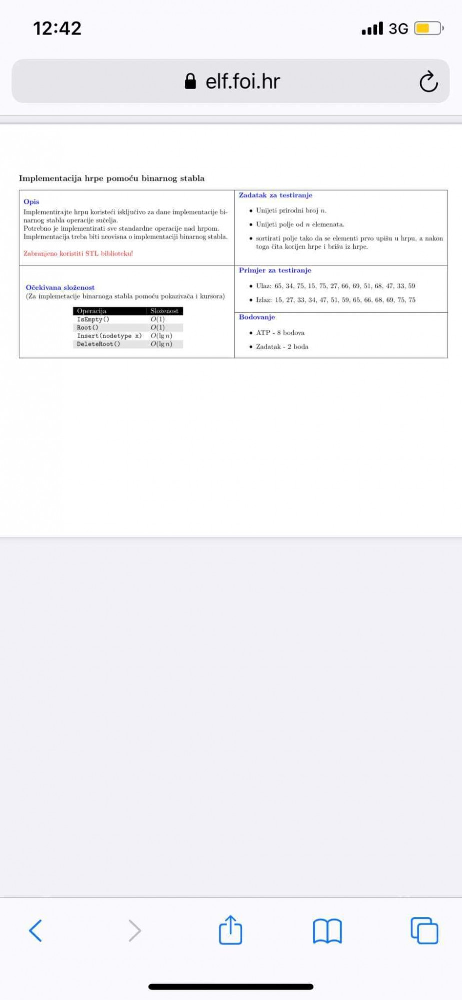

Tražim osobu koja dobro zna nmibp.
Jel ima netko da zna dobro programirati u Pythonu i da zna strojno učenje, točnije random forest metodu? Treba replicirati neki znanstveni članak koji govori o random forestu i treba implementirati to u jupyter notebooku. Rok je do 19.11. što je brzo ali voljan sam platiti onome tko nađe vremena i volje za to.🙏🙏🙏
Paco211 Ako je za uuzop, onda bi ovo trebalo bit dovoljno, bar po mom asistentu https://scikit-learn.org/stable/modules/generated/sklearn.ensemble.RandomForestClassifier.html
Jel se nekom da rijesiti sutra ujutro zadatak za labos (nesto tipa ASP) jednoj curi? Zadatak je ovog tipa 
Voljan sam platiti 300kn nekome tko će mi pomoći riješiti zadatke iz 4. labosa i objasniti. Tko je za nek mi šibne DM
MOD EDIT: Arhitektura računala 2
Postoji li bi osoba koja bi mi rješila ovaj labos za određenu cifru necega? Pod uvjetmo da osoba zna rješit za 100 posto…
MOD EDIT: Napredne baze podataka, 3. projekt
IdeGas Nekadašnji zadnji projekt iz NMiBP
zaš ovaj thread postoji?
2Đman ajde plz neko, platim vam
Pozdrav, ima li mozda netko volje i vremena pomoci oko labosa iz utr-a?
srebrniFazan ima
Pozdrav, trazim pomoc sa 4. labosom iz uvoda u umjetnu inteligenciju, ako je neko voljan pomoci javite u dm 🙂
Ima li netko dobar u kommreu da želi pomoći s pitanjima na blicu? Ove su godine sva pitanja nova, imamo 6 minuta za 5 pitanja, svako od barem 50 riječi, i treba odgovoriti tekstom.
Nudi neko 4 labos za određenu cijenu?
Tražim nekog voljnog za pomoć mi napisat 4 labos iz uvoda u umjetnu inteligenciju za određeni iznos!
Trebam nekog tko bi mi pomogo napisat 4 lab umjetna, za pare
Miroljub Petrovic Ispravljen bug! netreba vise
Plaćam 4. lab iz Umjetne (jebiga stislo)
pozdrav, tražim nekog za pomoć izrade jednostavne mobilne aplikacije